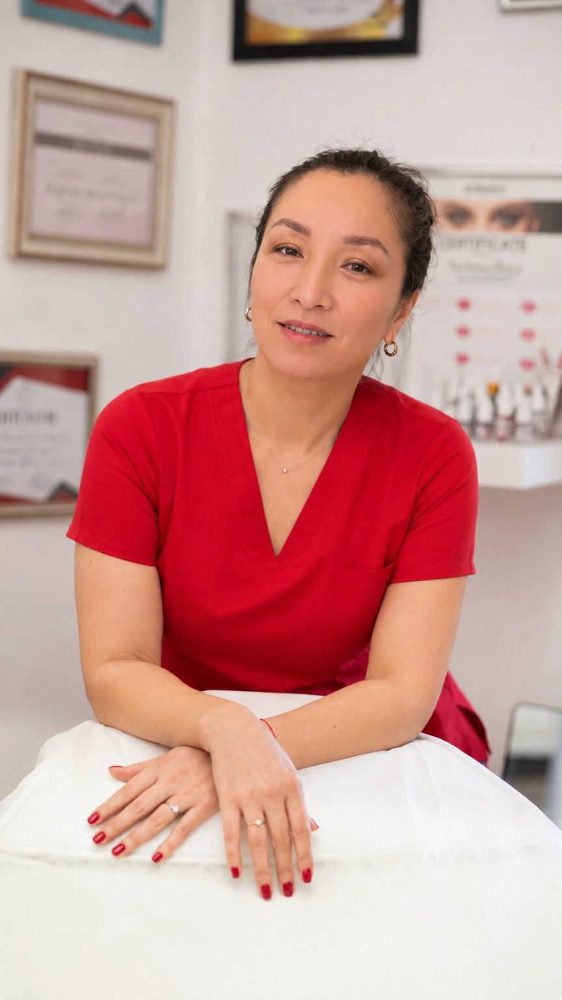
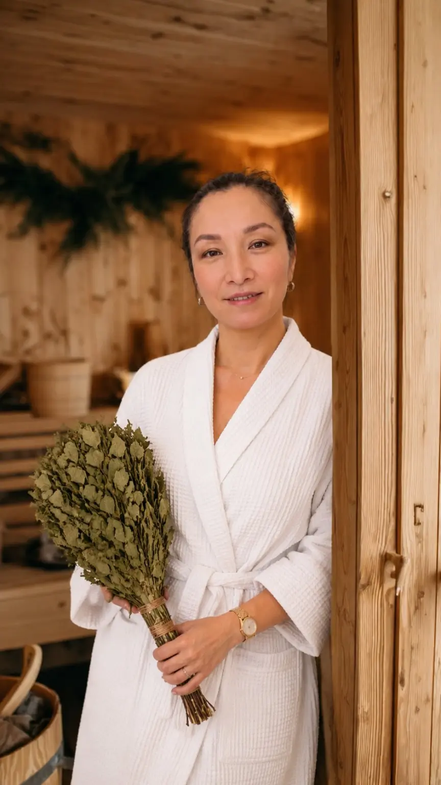

14-дневное групповое сопровождение
Постоянная поддержка, настройка мышления и контроль выполнения ежедневных задач.
Данная программа основана на глубоком опыте Суниты Таубаевой, объединяя физическое закаливание с трансформационными техниками, телесной работой и питанием для комплексной перезагрузки организма и сознания.
Постоянная поддержка, настройка мышления и контроль выполнения ежедневных задач.
Интеграция профессиональных техник массажа для снятия глубоких мышечных зажимов и улучшения лимфодренажа в сочетании с закаливанием.
Специально разработанный план питания, поддерживающий термогенез и обеспечивающий организм ресурсом без воспалительной нагрузки.
Глубокое прогревание, использование ароматерапевтических техник для гармонизации нервной системы после процедур холодового воздействия.
В основе марафона лежит авторская методология Суниты Таубаевой: работа с ограничивающими убеждениями через осознание кризиса и последующее построение плана действий. Марафон превращает физический стресс от закаливания в инструмент роста (гормезис), используя дыхание и телесные практики для перепрошивки нейронных связей.
Этап · Фокус внимания · Инструменты
Фокус: диагностика состояния и готовность ума.
Инструменты: психологические установки, рацион, водный баланс.
Фокус: закаливание, дыхание, трансформация блоков.
Инструменты: стойка «Х», дыхательные практики, контрастные процедуры.
Фокус: интеграция результатов и глубокая проработка.
Инструменты: банный ритуал, массажные техники, рефлексия.
Данная система позволяет выйти за пределы стандартного «здоровья» и достичь состояния, при котором физическая закалка становится фундаментом для личностной трансформации.
Данная методика была разработана для постепенного и комфортного вхождения в практику закаливания, сочетая физическое воздействие с ментальной перестройкой. Система направлена не только на укрепление тела, но и на снятие психологических барьеров.
Использование мягкого входа позволяет обмануть реакцию «бей или беги», превращая стресс от холода в полезный гормезис.
Глубокое дыхание и задержки меняют pH крови и повышают уровень CO₂, что действует как природный вазодилататор, улучшая кровоснабжение конечностей и слизистых.
Горячая вода и ванночки для ног помогают гармонизировать состояние после холода, снимая спазмы.
Сбалансированный рацион по пищевой пирамиде обеспечивает необходимый ресурс для термогенеза.
Примечание: во всех утренних программах — комната 20–22 °C, проветривание, горячая вода, сбалансированный завтрак. Водный баланс — 30 мл на 1 кг веса.
Самообследование, стакан воды, умывание, разминка 15 минут, стойка «Х» 15 минут, холодный чай.
Умывание холодной водой, контрастный душ на ноги.
Горячая вода, проветривание, разминка, стойка «Х», простукивание копчиком, холодный чай.
Умывание холодной водой, контрастный душ на ноги, дыхательные практики.
Контрастный душ на всё тело, разминка, стойка «Х».
Дыхание на улице, прогулка 5–15 минут, умывание холодной водой, контрастный душ на ноги.
Разминка с дыханием на улице 5–15 минут, контрастный душ.
Дыхание на улице, прогулка 5–15 минут, умывание холодной водой, контрастный душ на ноги.
Уличная разминка с дыханием 5–15 минут, контрастный душ.
Дыхание на улице, прогулка 5–15 минут, умывание холодной водой, контрастный душ на всё тело.
Разминка на улице в жилетке и шортах, контрастный душ.
Прогулка в жилетке и шортах, умывание холодной водой, контрастный душ на всё тело.
Разминка с дыханием на улице в жилетке и шортах, контрастный душ.
Прогулка в жилетке и шортах, умывание холодной водой, контрастный душ на всё тело.
Разминка с дыханием на улице в жилетке и шортах, контрастный душ.
Прогулка в жилетке и шортах, умывание холодной водой, контрастный душ на всё тело.
Разминка на улице, обтирание водой комнатной температуры, контрастный душ.
Прогулка в жилетке и шортах, умывание холодной водой, контрастный душ на всё тело.
Разминка на улице, обтирание водой комнатной температуры, контрастный душ.
Прогулка в жилетке и шортах, умывание холодной водой, контрастный душ на всё тело.
Разминка на улице, обтирание водой комнатной температуры, контрастный душ.
Прогулка в жилетке и шортах, умывание холодной водой, контрастный душ на всё тело.
Босиком по снегу, обтирание, контрастный душ.
Прогулка в жилетке и шортах, умывание холодной водой, контрастный душ на всё тело.
Босиком по снегу, обтирание, контрастный душ.
Прогулка в жилетке и шортах, умывание холодной водой, контрастный душ на всё тело.
Выход в купальнике, ходьба по снегу, полное обливание, контрастный душ, парение ног.
Прогулка, умывание холодной водой, контрастный душ на всё тело.
Закаливание — это тренировка систем организма, направленная на их подготовку к быстрой и своевременной реакции на внешние факторы. Любой контролируемый стрессор может выступать в роли закаливающего фактора.
Эволюционно это было важнейшим условием выживания, однако современные комфортные условия жизни привели к тому, что наши естественные защитные механизмы стали менее гибкими.
Закаливание способствует комплексному укреплению организма, помогая предупредить заболевания:
Использование закаливания имеет глубокие исторические корни:
В своих трудах, например в книге 1 «Канона врачебной науки», неоднократно подчёркивал пользу закаливания, включая купание в холодной солёной воде как для детей, так и для взрослых.
Описывал практики парения в бане и последующего купания младенцев в холодной воде, а также применение этих методов при болезнях.
Упоминали традиции обливания и обтирания снегом детей народами Северного Кавказа и Якутии.
Для эффективности методики необходимо соблюдать следующие правила:
Закаливание нельзя провести «про запас», требуется регулярность.
Начинать следует мягко, не допуская резких нагрузок, но постоянно прогрессируя.
Обязательно учитывать возраст и физическое состояние ребёнка.
Строго соблюдать периодичность воздействия факторов.
Проводить мероприятия только с хорошим настроением.
Использовать всесторонние подходы к закаливанию.
Программа поможет сделать первые шаги к качественной жизни.
Закаливание тренирует организм и возвращает природную защиту.
Клеточное питание — фундамент здоровья. Правильные нутриенты обеспечивают синтез АТФ, обновление тканей и иммунную устойчивость.
Глубокие ритмичные вдохи и выдохи — гипервентиляция — с последующей задержкой дыхания. Это насыщает кровь кислородом и повышает pH.
Чередование температур для тренировки сосудистого русла и терморегуляции.
Постепенное приучение кожи к температурным перепадам.
Ходьба босиком, включая снег, для стимуляции рецепторов стоп.
Консультация врача обязательна при сердечно-сосудистых патологиях или эпилепсии. Закаливание — это контролируемый стресс.
Закаливание — это не только физиологический процесс. Регулярное воздействие холода укрепляет ваше физическое поле — энергетическую структуру. Холод «выжигает» застойные явления в энергетических каналах, повышая общую вибрационную частоту организма.
Системное закаливание переводит тело в режим высокой энергетической эффективности, где энергия не тратится на борьбу с мелкими патогенами, а направляется на созидание, фокусировку и реализацию вашего потенциала. Вы обретаете внутреннюю стабильность и мощный энергетический заряд, который чувствуется на физическом и ментальном уровнях.
Массаж и телесные практики — это мощный инструмент комплексной трансформации, охватывающий все уровни человеческой целостности: физический, эмоциональный, ментальный, энергетический, социальный, родовой и духовный. Ниже приведена детальная структура ценности и видов практик для каждого поля.

Тело, соматика, здоровье
Снятие мышечных зажимов, улучшение трофики тканей, запуск лимфодренажа, коррекция осанки, устранение хронических болей.
Чувства, проживание блоков
Высвобождение подавленных эмоций (страх, гнев, обида). Безопасный катарсис через снятие телесных блоков.
Мысли, фокус
Остановка «ментальной жвачки», снижение когнитивного утомления, возврат в состояние «здесь и сейчас».
Жизненная сила, тонус
Восстановление тока энергии, устранение энергетических застоев, повышение жизненного тонуса.
Взаимодействие, границы
Осознание телесных границ, уверенность в себе, право занимать пространство, свобода самовыражения.
Связь с корнями
Проработка паттернов выживания, глубокая «перезапись» родовых программ безопасности.
Целостность, интуиция
Глубокая тишина, единение духа и тела, открытие доступа к интуитивному знанию.
Данный документ представляет собой структурированную программу для работы с телом и сознанием, сфокусированную на адаптации к температурным изменениям и преодолении психологических блоков.
Знакомство с границами тела и фиксация саботажа.
Первые попытки ума «договориться» и прорыв через дыхание.
Первый шаг к контрасту всего тела.
Интеграция уличного дыхания.
Укрепление привычки и телесная стабильность.
Выход в открытое пространство — жилетка и шорты.
Экватор: промежуточный итог и закрепление базового блока.
Вторая половина пути — углубление практики.
Введение обтираний водой комнатной температуры.
Интеграция обтираний и усиление термогенеза.
Устойчивость к внешним факторам.
Первый контакт со снежной стихией.
Закрепление контакта со снегом и преодоление барьеров.
Кульминация: полное обновление и глубокое прогревание.
Самообследование, утренние процедуры (вода, умывание), разминка + стойка «Х» (15 мин), холодный чай, вечерний контрастный душ.
Проветривание, разминка, стойка «Х» + простукивание копчиком, дыхательные практики.
Контрастный душ на всё тело, вечерняя прогулка с дыханием на улице.
Уличная разминка (5–15 мин), контрастный душ, вечерние дыхательные техники на улице.
Уличная разминка, контрастный душ на всё тело в проветриваемом помещении.
Выход на улицу в жилетке и шортах, дыхание, контрастный душ.
Закрепление блока: уличная разминка в жилетке/шортах, контрастный душ.
Стандартный протокол: уличная разминка, контрастный душ.
Обтирание рук и ног (вода комн. температуры), контрастный душ.
Интеграция обтираний и усиление термогенеза.
Закрепление устойчивости, уличная прогулка в облегчённой одежде.
Первый выход босиком на снег, обтирания, контрастный душ.
Повторение контакта со снегом, преодоление барьеров.
Кульминация: выход в купальнике на снег, полное обливание, парение ног, глубокое прогревание.
Данный мастермайнд предназначен для проведения в середине марафона, когда участники сталкиваются с пиком сопротивления ума и физическим саботажем.
Цель мастермайнда: разобрать текущие кризисы участников, снять ментальные блоки и пересобрать фокус на вторую половину марафона.
Ведущий создаёт атмосферу безопасности. Участники делают глубокий вдох и выдох.
Формат: каждый участник по кругу за 1 минуту называет свой главный «затык» на текущем этапе: «Мой главный затык сейчас — это…».
Выбор 2–3 наиболее ярких и показательных запросов от участников.
Механика разбора: ведущий помогает участнику увидеть за физическим сопротивлением скрытую психологическую выгоду или ограничивающую установку.
Пример подхода: перевод фокуса с борьбы с мыслями на безоговорочное выполнение протокола — авторский алгоритм без «права на дискуссию» с умом.
Ведущий просит участников, узнавших себя в озвученных проблемах, дать знак.
Эффект: осознание того, что страхи и саботаж — это общая механика психики, снимает чувство вины и даёт ресурс через поддержку группы.
Участники фиксируют для себя два пункта:
Завершение встречи короткой дыхательной настройкой.
«Марафон — это не про борьбу с холодом, а про трансформацию отношений с собственным умом.»
Для условий резко континентального климата Астаны и помещений с витражным остеклением ключевым является принцип многослойности. Это позволяет регулировать температуру тела, предотвращая перегрев в нагретых солнцем помещениях и сохраняя тепло на улице.
Тонкий хлопок, вискоза, лёгкий трикотаж или повседневное дышащее термобельё.
Плотный пуховик, ветрозащитные брюки. Тёплый свитер — шерсть или флис — надевается поверх базы для быстрого снятия в помещении.
Футболки, лонгсливы из натуральных тканей, тонкие рубашки.
Ветрозащитная куртка, тренч. Кардиган, жилет или худи на молнии для лёгкой адаптации к смене температуры.
Свободная одежда из льна, муслина, марлёвки или шёлка светлых оттенков — оверсайз.
Лёгкая накидка или льняная рубашка с длинным рукавом для защиты от прямого ультрафиолета. Головной убор.
Зимой и в демисезон используйте слои, которые легко снять. Надевание плотного шерстяного свитера непосредственно на голое тело часто ведёт к перегреву.
Для помещений выбирайте тонкую мериновую шерсть или хлопок. Спортивная синтетика в помещении может создать «парниковый эффект».
Перегрев организма часто начинается со стоп. Обязательно переобувайтесь в помещении в лёгкую обувь.
В закрытых витражных пространствах важна свободная, струящаяся одежда, не прилегающая к телу, чтобы обеспечить циркуляцию воздуха.
Банный ритуал — это не просто процедура очищения, а кульминация вашего 14-дневного марафона. Это пространство, где физическое закаливание встречается с глубоким релаксом, а ароматерапия становится ключом к внутренней тишине.

Перед входом в парную — создание ольфакторного «кокона». Использование авторских композиций ароматов, которые мягко воздействуют на лимбическую систему, помогая отпустить контроль и подготовить тело к тепловому воздействию.
Мягкое повышение температуры, работа с дыханием. Мы используем веники — берёзовые или можжевеловые — для бесконтактного парения, создавая «ароматное облако», которое прогревает ткани на глубоком уровне, не перегружая сердце.
Интеграция техник направленного воздействия на триггерные зоны. Массаж в условиях бани позволяет мышцам расслабиться в разы быстрее, а лимфатической системе — вывести накопившиеся продукты обмена.
После глубокого прогрева — лёгкое омовение прохладной водой. Это не «шок», а мягкий контраст для тренировки сосудов, который завершается возвращением в тепло — для окончательной гармонизации состояния.
После парения — отдых с травяным чаем и арома-терапией. В этот момент происходит «заземление» всех трансформационных процессов, проработанных за 14 дней марафона.
«Баня — это время, когда ум замолкает, а тело начинает говорить. Это идеальное завершение вашего пути к новому себе.»